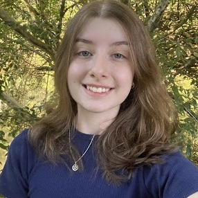
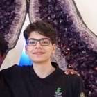
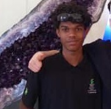

Stella
Sou física e professora do IFSC, natural de Brasília-DF. Doutora em Cosmologia pelo CBPF, tenho paixão pela ciência, pela leitura e pela divulgação científica. Oriento o projeto Masterclass do CERN no Campus São Lourenço do Oeste, que aproxima estudantes do universo das partículas e da pesquisa internacional. Em 2024, participei da Escola do CERN para Professores em Língua Portuguesa, vivência que reforçou ainda mais minha ligação com a colaboração científica global. E no teste do CERN, a minha partícula é o elétron, lembrando que ciência também pode ser divertida.

Julia
Me chamo Julia, tenho 16 anos e sou Estudante do Ensino Médio Técnico em Marketing no IFSC, apaixonada por ciência e livros! Segundo o teste do CERN, sou um Strange Quark.
Alice
Sou estudante do ensino médio técnico em marketing no campus são Lourenço do oeste e atualmente estou atuando como bolsista no projeto Masterclass!
Meu interesse em física cresceu após entrar no ensino médio e ver como as oportunidades se abriram para mim!

Taylor
Me chamo Taylor e sou mais um estudante do ensino médio técnico em marketing, e atualmente sigo atuando como bolsista do projeto masterclass. Tenho um grande interresse por fisica e tecnologia.
seguindo o teste do Cern eu sou um Anti-Neutrino do Eletron!

Felipe
Me chamo Felipe e sou estudante do Ensino Médio Técnico em Marketing. Atualmente, atuo como voluntário no projeto masterclass. Tenho grande interesse por Física e História, áreas que despertam minha curiosidade e me motivam a compreender melhor o mundo e suas transformações.
E sobre o teste do Cern eu sou um Neutrino de Múon